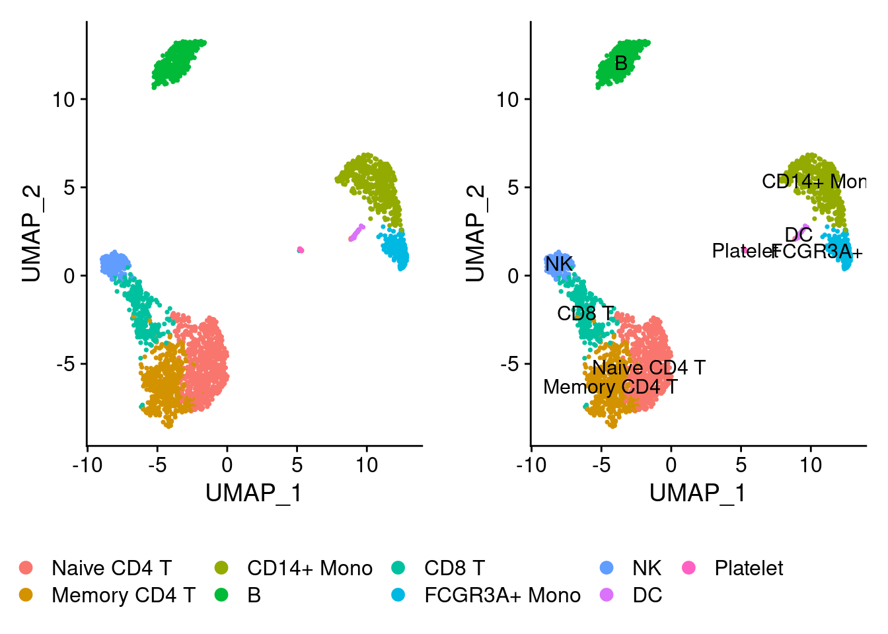
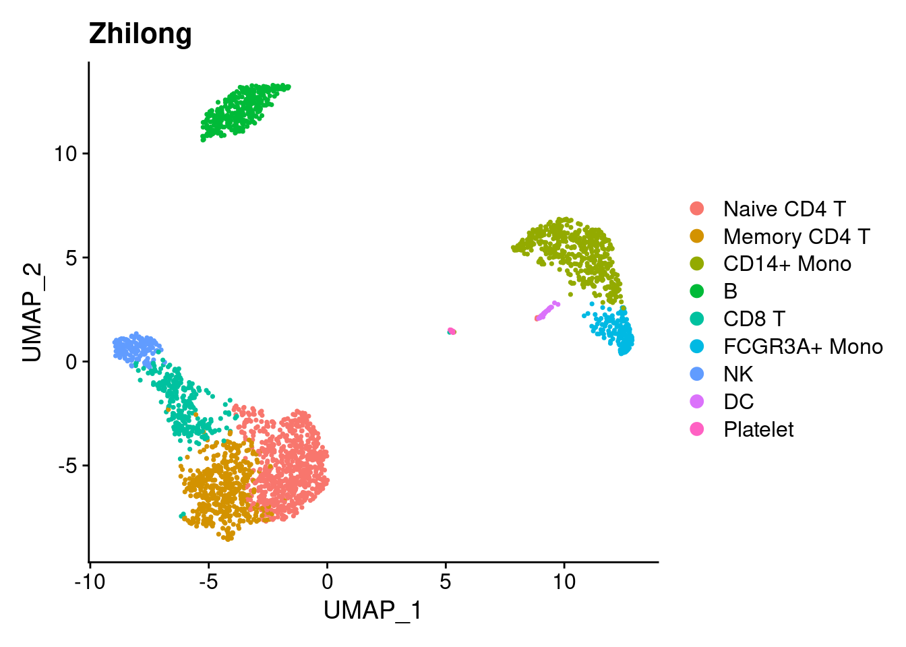

Chapter 2 Introduction
Based on singleronSC1.html
2.1 Read data Library packages
library(Seurat)
library(SeuratData)
library(tidyverse)
pbmc <- pbmc3k.final
head(pbmc@meta.data)## orig.ident nCount_RNA nFeature_RNA seurat_annotations percent.mt
## AAACATACAACCAC pbmc3k 2419 779 Memory CD4 T 3.0177759
## AAACATTGAGCTAC pbmc3k 4903 1352 B 3.7935958
## AAACATTGATCAGC pbmc3k 3147 1129 Memory CD4 T 0.8897363
## AAACCGTGCTTCCG pbmc3k 2639 960 CD14+ Mono 1.7430845
## AAACCGTGTATGCG pbmc3k 980 521 NK 1.2244898
## AAACGCACTGGTAC pbmc3k 2163 781 Memory CD4 T 1.6643551
## RNA_snn_res.0.5 seurat_clusters
## AAACATACAACCAC 1 1
## AAACATTGAGCTAC 3 3
## AAACATTGATCAGC 1 1
## AAACCGTGCTTCCG 2 2
## AAACCGTGTATGCG 6 6
## AAACGCACTGGTAC 1 1pbmc@commands$FindClusters## Command: FindClusters(pbmc3k.final, resolution = 0.5)
## Time: 2020-04-30 12:54:53
## graph.name : RNA_snn
## modularity.fxn : 1
## resolution : 0.5
## method : matrix
## algorithm : 1
## n.start : 10
## n.iter : 10
## random.seed : 0
## group.singletons : TRUE
## verbose : TRUE2.2 DimPlot : cell or cluster
plot1<-DimPlot(pbmc, reduction = "umap")
plot2<-DimPlot(pbmc, reduction = "umap",label = T)
CombinePlots(plots = list(plot1, plot2),legend="bottom")## Warning: CombinePlots is being deprecated. Plots should now be combined using
## the patchwork system.
2.3 单细胞可视化
2.4 dimplot1
library(ggplot2)
DimPlot(pbmc3k.final)+ ggtitle('Zhilong') ## umap1
library(Seurat)
library(SeuratData)
library(tidyverse)
p1<- DimPlot(pbmc3k.final)
head(DimPlot(pbmc3k.final)$data)## UMAP_1 UMAP_2 ident
## AAACATACAACCAC -4.232792 -4.152139 Memory CD4 T
## AAACATTGAGCTAC -4.892886 10.985685 B
## AAACATTGATCAGC -5.508639 -7.211088 Memory CD4 T
## AAACCGTGCTTCCG 11.332233 3.161727 CD14+ Mono
## AAACCGTGTATGCG -7.450703 1.092022 NK
## AAACGCACTGGTAC -3.509504 -6.087042 Memory CD4 Tp2<- ggplot(DimPlot(pbmc3k.final)$data, aes(UMAP_1, UMAP_2, fill=ident)) +
geom_point(shape=21,colour="black", stroke=0.25, alpha=0.8) +
DimPlot(pbmc3k.final, label = T)$theme +
theme_bw()+ NoLegend()
p2+ p1 ## umap2
## umap2
pbmc<- pbmc3k.final
pbmc<-AddMetaData(pbmc,pbmc@reductions$umap@cell.embeddings,col.name = colnames(pbmc@reductions$umap@cell.embeddings))
head(pbmc@meta.data)## orig.ident nCount_RNA nFeature_RNA seurat_annotations percent.mt
## AAACATACAACCAC pbmc3k 2419 779 Memory CD4 T 3.0177759
## AAACATTGAGCTAC pbmc3k 4903 1352 B 3.7935958
## AAACATTGATCAGC pbmc3k 3147 1129 Memory CD4 T 0.8897363
## AAACCGTGCTTCCG pbmc3k 2639 960 CD14+ Mono 1.7430845
## AAACCGTGTATGCG pbmc3k 980 521 NK 1.2244898
## AAACGCACTGGTAC pbmc3k 2163 781 Memory CD4 T 1.6643551
## RNA_snn_res.0.5 seurat_clusters UMAP_1 UMAP_2
## AAACATACAACCAC 1 1 -4.232792 -4.152139
## AAACATTGAGCTAC 3 3 -4.892886 10.985685
## AAACATTGATCAGC 1 1 -5.508639 -7.211088
## AAACCGTGCTTCCG 2 2 11.332233 3.161727
## AAACCGTGTATGCG 6 6 -7.450703 1.092022
## AAACGCACTGGTAC 1 1 -3.509504 -6.087042library(dplyr)
class_avg <- pbmc@meta.data %>%
group_by(seurat_annotations) %>%
summarise(
UMAP_1 = median(UMAP_1),
UMAP_2 = median(UMAP_2)
)
allcolour=c("#DC143C","#0000FF","#20B2AA","#FFA500","#9370DB","#98FB98","#F08080","#1E90FF","#7CFC00","#FFFF00",
"#808000","#FF00FF","#FA8072","#7B68EE","#9400D3","#800080","#A0522D","#D2B48C","#D2691E","#87CEEB","#40E0D0","#5F9EA0",
"#FF1493","#0000CD","#008B8B","#FFE4B5","#8A2BE2","#228B22","#E9967A","#4682B4","#32CD32","#F0E68C","#FFFFE0","#EE82EE",
"#FF6347","#6A5ACD","#9932CC","#8B008B","#8B4513","#DEB887")
umap <- ggplot(pbmc@meta.data ,aes(x=UMAP_1,y=UMAP_2))+
geom_point(aes(color=seurat_annotations))+
scale_color_manual(values = allcolour)+
geom_text(aes(label = seurat_annotations), data = class_avg)+
theme(text=element_text(family="Arial",size=18)) +
theme(panel.background = element_rect(fill='white', colour='black'),
panel.grid=element_blank(), axis.title = element_text(color='black',
family="Arial",size=18),axis.ticks.length = unit(0.4,"lines"),
axis.ticks = element_line(color='black'),
axis.ticks.margin = unit(0.6,"lines"),
axis.line = element_line(colour = "black"),
axis.title.x=element_text(colour='black', size=18),
axis.title.y=element_text(colour='black', size=18),
axis.text=element_text(colour='black',size=18),
legend.title=element_blank(),
legend.text=element_text(family="Arial", size=18),
legend.key=element_blank())+
theme(plot.title = element_text(size=22,colour = "black",face = "bold")) +
guides(colour = guide_legend(override.aes = list(size=5)))## Warning: `axis.ticks.margin` is deprecated. Please set `margin` property of
## `axis.text` insteadumap
set.seed(42)#可重复性的
pbmc$replicate <- sample(c("rep1", "rep2"), size = ncol(pbmc), replace = TRUE)
head(pbmc@meta.data)## orig.ident nCount_RNA nFeature_RNA seurat_annotations percent.mt
## AAACATACAACCAC pbmc3k 2419 779 Memory CD4 T 3.0177759
## AAACATTGAGCTAC pbmc3k 4903 1352 B 3.7935958
## AAACATTGATCAGC pbmc3k 3147 1129 Memory CD4 T 0.8897363
## AAACCGTGCTTCCG pbmc3k 2639 960 CD14+ Mono 1.7430845
## AAACCGTGTATGCG pbmc3k 980 521 NK 1.2244898
## AAACGCACTGGTAC pbmc3k 2163 781 Memory CD4 T 1.6643551
## RNA_snn_res.0.5 seurat_clusters UMAP_1 UMAP_2 replicate
## AAACATACAACCAC 1 1 -4.232792 -4.152139 rep1
## AAACATTGAGCTAC 3 3 -4.892886 10.985685 rep1
## AAACATTGATCAGC 1 1 -5.508639 -7.211088 rep1
## AAACCGTGCTTCCG 2 2 11.332233 3.161727 rep1
## AAACCGTGTATGCG 6 6 -7.450703 1.092022 rep2
## AAACGCACTGGTAC 1 1 -3.509504 -6.087042 rep2as.data.frame(prop.table(table(Idents(pbmc), pbmc@meta.data[,"replicate"]), margin = 2))-> pdf -> td
library(tidyverse)
allcolour=c("#DC143C","#0000FF","#20B2AA","#FFA500","#9370DB","#98FB98","#F08080","#1E90FF","#7CFC00","#FFFF00","#808000","#FF00FF","#FA8072","#7B68EE","#9400D3","#800080","#A0522D","#D2B48C","#D2691E","#87CEEB","#40E0D0","#5F9EA0","#FF1493","#0000CD","#008B8B","#FFE4B5","#8A2BE2","#228B22","#E9967A","#4682B4","#32CD32","#F0E68C","#FFFFE0","#EE82EE","#FF6347","#6A5ACD","#9932CC","#8B008B","#8B4513","#DEB887")
allcolour -> colour1
plt<- ggplot(td,aes(x=td[,2],y=td[,3],fill=td[,1]))+
geom_bar(position = 'stack',stat="identity")+
labs(x="replicate",y="Cells Ratio")+
theme(panel.background=element_rect(fill='transparent', color='black'),
legend.key=element_rect(fill='transparent', color='transparent'),axis.text = element_text(color="black"))+
scale_y_continuous(expand=c(0.001,0.001))+
scale_fill_manual(values=colour1)+
guides(fill = guide_legend(keywidth = 1, keyheight = 1,ncol=1,title = 'Cluster'))
plt
2.5 比例
col <- c('red','blue','cyan4','yellow','skyblue','purple', 'olivedrab3','springgreen','olivedrab1','forestgreen','darkslateblue')
p3<- ggplot(td,aes(x=td[,2],y=td[,3],fill=td[,1])) +
geom_bar(stat = "identity", position = "fill")+
scale_fill_manual(values=col) +coord_flip()
p4<- ggplot(td,aes(x=td[,2],y=td[,3],fill=td[,1])) +
geom_bar(stat = "identity", position = "fill")+
scale_fill_manual(values=col) +facet_wrap(~ td[,2], scales = 'free')
p5<- ggplot(td,aes(x=td[,2],y=td[,3],fill=td[,1])) +
geom_bar(stat = "identity", position = "fill")+
scale_fill_manual(values=col) +coord_polar(theta = 'y')
p5
2.6 数据转化
library(tidyr)
head( pbmc@meta.data)## orig.ident nCount_RNA nFeature_RNA seurat_annotations percent.mt
## AAACATACAACCAC pbmc3k 2419 779 Memory CD4 T 3.0177759
## AAACATTGAGCTAC pbmc3k 4903 1352 B 3.7935958
## AAACATTGATCAGC pbmc3k 3147 1129 Memory CD4 T 0.8897363
## AAACCGTGCTTCCG pbmc3k 2639 960 CD14+ Mono 1.7430845
## AAACCGTGTATGCG pbmc3k 980 521 NK 1.2244898
## AAACGCACTGGTAC pbmc3k 2163 781 Memory CD4 T 1.6643551
## RNA_snn_res.0.5 seurat_clusters UMAP_1 UMAP_2 replicate
## AAACATACAACCAC 1 1 -4.232792 -4.152139 rep1
## AAACATTGAGCTAC 3 3 -4.892886 10.985685 rep1
## AAACATTGATCAGC 1 1 -5.508639 -7.211088 rep1
## AAACCGTGCTTCCG 2 2 11.332233 3.161727 rep1
## AAACCGTGTATGCG 6 6 -7.450703 1.092022 rep2
## AAACGCACTGGTAC 1 1 -3.509504 -6.087042 rep2td_tidy<-spread(data = td, key = "Var1", value = "Freq")
head(td_tidy)## Var2 Naive CD4 T Memory CD4 T CD14+ Mono B CD8 T FCGR3A+ Mono
## 1 rep1 0.2626113 0.1847181 0.1721068 0.1283383 0.11424332 0.06008902
## 2 rep2 0.2658915 0.1813953 0.1922481 0.1325581 0.09069767 0.06279070
## NK DC Platelet
## 1 0.06008902 0.01335312 0.004451039
## 2 0.05736434 0.01085271 0.006201550td_tidy2 <- gather(data = td_tidy,key = "Var1", value = "Freq", -Var2)
head(td_tidy2)## Var2 Var1 Freq
## 1 rep1 Naive CD4 T 0.2626113
## 2 rep2 Naive CD4 T 0.2658915
## 3 rep1 Memory CD4 T 0.1847181
## 4 rep2 Memory CD4 T 0.1813953
## 5 rep1 CD14+ Mono 0.1721068
## 6 rep2 CD14+ Mono 0.19224812.7 sessionInfo
sessionInfo()## R version 4.0.4 (2021-02-15)
## Platform: x86_64-pc-linux-gnu (64-bit)
## Running under: Ubuntu 20.10
##
## Matrix products: default
## BLAS: /usr/lib/x86_64-linux-gnu/blas/libblas.so.3.9.0
## LAPACK: /usr/lib/x86_64-linux-gnu/lapack/liblapack.so.3.9.0
##
## locale:
## [1] LC_CTYPE=en_US.UTF-8 LC_NUMERIC=C
## [3] LC_TIME=en_GB.UTF-8 LC_COLLATE=en_US.UTF-8
## [5] LC_MONETARY=en_GB.UTF-8 LC_MESSAGES=en_US.UTF-8
## [7] LC_PAPER=en_GB.UTF-8 LC_NAME=C
## [9] LC_ADDRESS=C LC_TELEPHONE=C
## [11] LC_MEASUREMENT=en_GB.UTF-8 LC_IDENTIFICATION=C
##
## attached base packages:
## [1] stats graphics grDevices utils datasets methods base
##
## other attached packages:
## [1] forcats_0.5.1 stringr_1.4.0 dplyr_1.0.5
## [4] purrr_0.3.4 readr_1.4.0 tidyr_1.1.3
## [7] tibble_3.1.1 ggplot2_3.3.3 tidyverse_1.3.1
## [10] pbmc3k.SeuratData_3.1.4 SeuratData_0.2.1 SeuratObject_4.0.0
## [13] Seurat_4.0.1
##
## loaded via a namespace (and not attached):
## [1] readxl_1.3.1 backports_1.2.1 plyr_1.8.6
## [4] igraph_1.2.6 lazyeval_0.2.2 splines_4.0.4
## [7] listenv_0.8.0 scattermore_0.7 digest_0.6.27
## [10] htmltools_0.5.1.1 fansi_0.4.2 magrittr_2.0.1
## [13] tensor_1.5 cluster_2.1.2 ROCR_1.0-11
## [16] globals_0.14.0 modelr_0.1.8 matrixStats_0.58.0
## [19] spatstat.sparse_2.0-0 colorspace_2.0-0 rvest_1.0.0
## [22] rappdirs_0.3.3 ggrepel_0.9.1 haven_2.4.0
## [25] xfun_0.22 crayon_1.4.1 jsonlite_1.7.2
## [28] spatstat.data_2.1-0 survival_3.2-10 zoo_1.8-9
## [31] glue_1.4.2 polyclip_1.10-0 gtable_0.3.0
## [34] leiden_0.3.7 future.apply_1.7.0 abind_1.4-5
## [37] scales_1.1.1 DBI_1.1.1 miniUI_0.1.1.1
## [40] Rcpp_1.0.6 viridisLite_0.4.0 xtable_1.8-4
## [43] reticulate_1.18 spatstat.core_2.1-2 htmlwidgets_1.5.3
## [46] httr_1.4.2 RColorBrewer_1.1-2 ellipsis_0.3.1
## [49] ica_1.0-2 pkgconfig_2.0.3 farver_2.1.0
## [52] sass_0.3.1 uwot_0.1.10 dbplyr_2.1.1
## [55] deldir_0.2-10 utf8_1.2.1 tidyselect_1.1.0
## [58] labeling_0.4.2 rlang_0.4.10 reshape2_1.4.4
## [61] later_1.1.0.1 munsell_0.5.0 cellranger_1.1.0
## [64] tools_4.0.4 cli_2.4.0 generics_0.1.0
## [67] broom_0.7.6 ggridges_0.5.3 evaluate_0.14
## [70] fastmap_1.1.0 yaml_2.2.1 goftest_1.2-2
## [73] knitr_1.32 fs_1.5.0 fitdistrplus_1.1-3
## [76] RANN_2.6.1 pbapply_1.4-3 future_1.21.0
## [79] nlme_3.1-152 mime_0.10 xml2_1.3.2
## [82] compiler_4.0.4 rstudioapi_0.13 plotly_4.9.3
## [85] png_0.1-7 spatstat.utils_2.1-0 reprex_2.0.0
## [88] bslib_0.2.4 stringi_1.5.3 highr_0.9
## [91] lattice_0.20-41 Matrix_1.3-2 vctrs_0.3.7
## [94] pillar_1.6.0 lifecycle_1.0.0 spatstat.geom_2.1-0
## [97] lmtest_0.9-38 jquerylib_0.1.3 RcppAnnoy_0.0.18
## [100] data.table_1.14.0 cowplot_1.1.1 irlba_2.3.3
## [103] httpuv_1.5.5 patchwork_1.1.1 R6_2.5.0
## [106] bookdown_0.21 promises_1.2.0.1 KernSmooth_2.23-18
## [109] gridExtra_2.3 parallelly_1.24.0 codetools_0.2-18
## [112] MASS_7.3-53.1 assertthat_0.2.1 withr_2.4.2
## [115] sctransform_0.3.2 mgcv_1.8-35 parallel_4.0.4
## [118] hms_1.0.0 grid_4.0.4 rpart_4.1-15
## [121] rmarkdown_2.7 Rtsne_0.15 shiny_1.6.0
## [124] lubridate_1.7.10